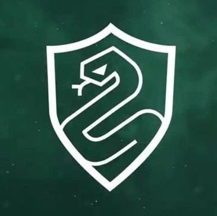

Informazioni Generali
Corso tenuto: Pozioni
Data di nascita: 9 Gennaio 1960
Ufficio personale: Ala Ovest Sotterranei
Email: severus.piton@hogwarts.com
Orari di Ricevimento: Recarsi all'ufficio personale del docente, previa prenotazione, preferibilmente mercoledì ore 16-17 ma è possibile concordare altri giorni e orari. Contattare il docente via mail per fissare un appuntamento.
Serpeverde
Direttore della Casata
Per accedere alla sala comune è necessario scendere nei sotterranei.